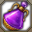

222 (Speedy) 🐆¶
Best For: Players who want something easy to pick up but difficult to master.
Tradeoff: Increased back attack stress and uptime requirements.
- Simple uptime-focused gameplay with no gimmicks.
- Highest mobility of all Deathblade builds by far.
- Tons of push immunity, excess stacks and skill expression.
- Very high gem efficiency, Surge and Deathly Slash are nearly all of your DPS.
- Must constantly balance Surge and Deathly Slash back attack rate with Surge CPM.
Skill Codes¶
WarnBefore Importing
Make sure you've read Essentials, then apply both "Ark Passive" and "Skill" to be safe. For Gems, follow the guide.
C06A3B47771F94196FF77A21B5E812E11A4022564D8CCFB777B5D3B6DD467A9D4E482691C148EE1DCF0F3AF2D77D3F6994614C0EF00BEC4F843D73B8E2D72180
Ark Setup¶
TipArk Passive
- Use the Ark Passive Calculator to optimize Evolution nodes.
- Chaos Infusion 1 + Orb Control 1 can be used if your Surge dps share is consistently over 50%.
- This build is capable of using Raid Captain + Mass Increase with the least drawbacks.
NoteArk Grid
- Damage and QoL will be seriously lacking if you settle for the minimum core requirements.
Skill Setup¶
TipRunes
- Use Legendary Purify on Head Hunt if needed.
- Use Legendary Bleed on Maelstrom if you don't experience mana issues.
- Bleed is about 0.75% DPS in exchange for playing skillfully or using mana food.
- Use Legendary Vision on Surprise Attack if you don't use RC or MI engravings.
- Increases chance of getting an extra stack on Surprise Attack precast.
- Give Head Hunt the next best Galewind or Vision rune that's available.
NoteOptional
- You can bring Head Hunt down to Lv 1 for lower mana use.
- Earth Cleaver can be used instead of Head Hunt if you prefer.
- You can replace Dark Axel for Spincutter if you find it more useful.
- You can use Wide Attack tripod on Surprise Attack if your uptime with Turning Slash is good.
Note🐆 vs 🐯
Gems¶
NoteGem Requirements
- To reach its ceiling, this build requires higher level cooldown gems than the others.
- Mass Increase and/or Optimized Training 1 help smooth things out at low investment levels.
- +CD% bracelet increases gem level requirements by 1, low Specialization is not recommended.
- Once Blade Dance and Maelstrom CD are at Lv 9, Wind Cut CD priority increases significantly.
Rotation¶
There's an optimal skill order, but you have flexibility when facing downtime or weaving in mobility skills.
'Destiny: Sharp Senses' can be stacked up to 5 times by using (Normal) skills to empower Deathly Slash.
Use Dark Axel to guarantee back attacks on Deathly Slash and Surge if needed.
Use the Opener cycle and either loop it forever (easy) or continue on to the advanced cycles (ceiling).
From 3 orbs:
TipLeopard Mode (Optional)
Alternate between these two cycles as needed for ceiling DPS:
- Cycle 2 offers safety by leaving Surprise Attack as a recovery option; Cycle 3 offers higher CPM.
- Rotating 2>3>2>3 is ideal, but based on boss patterns, variations like 2>3>3>2 or 2>2>3>3 are valid.
- Recover stacks with Wind Cut or Surprise Attack, decide your next cycle based on which one is available.
- You can skip a Surprise Attack finisher whenever you're at 49+ stacks before Deathly Slash.
- Same for 40+ stacks before Blade Dance, 30+ stacks before Upper Slash, etc.
- If you have 7+ stacks at the moment you activate Death Arts, you can skip it.
- Be mindful of missed Maelstrom/Wind Cut hits from boss patterns and movement.
It helps to think of everything within Death Trance and  Deathly Slash as 53 stacks, and the Wind Cut Precast or Surprise Attack finisher as flexible options that give you the 7+ stacks needed to complete a 60+ stack Surge.
Deathly Slash as 53 stacks, and the Wind Cut Precast or Surprise Attack finisher as flexible options that give you the 7+ stacks needed to complete a 60+ stack Surge.
- Depending on attack speed/latency, your Wind Cut precast may grant 7 stacks instead of 8.
- With lower Attack Speed (Mass Increase), Deathly Slash may grant 12 stacks instead of 11.
- It's better to cast a ~59 stack Surge if the alternative is waiting more than 1.5 seconds.
- Delaying Deathly Slash + Surge by more than 1.75 seconds to ensure a back attack is a DPS loss.
- Delaying only Surge by more than 1 second to ensure a back attack is also a DPS loss.
From zero orbs:
- Use a

Stimulant (recommended) or proceed to #2. - Generate one orb, build at least 40 stacks, then Surge to refill all 3 orbs.